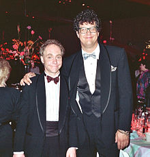

Penn & Teller, Penn Jillette and Teller, are American magicians, entertainers, and scientific skeptics who have performed together since the late 1970s, noted for their ongoing act that combines elements of comedy with magic. The duo has been featured in numerous stage and television shows such as Penn & Teller: Fool Us and they currently perform in Las Vegas at The Rio, the longest running headliners to play at the same hotel in Las Vegas history.[2] Penn Jillette serves as the act's orator and raconteur. Teller generally does not speak while performing, and instead communicates through mime and nonverbals, though his voice can occasionally be heard during their live shows and television appearances. Besides magic, the pair has become associated with the advocacy of scientific skepticism, and Right-libertarianism, particularly through their television show Penn & Teller:
From 2003 to 2010, their Showtime television show Bullshit! took a skeptical look at psychics, religion, the pseudoscientific, conspiracy theories, and the paranormal. It has featured critical segments on gun control, astrology, Feng Shui, environmental issues, PETA, weight loss, the Americans with Disabilities Act, and the war on drugs. The pair have written several books about magic, including Penn & Teller's Cruel Tricks For Dear Friends, Penn & Teller's How to Play with Your Food, and Penn & Teller's How to Play in Traffic. Since 2001, Penn & Teller have performed in Las Vegas at the Rio All Suite Hotel and Casino.[9]Penn Jillette hosted a weekday one-hour talk show on Infinity Broadcasting's Free FM radio network from January 3, 2006, to March 2, 2007, with cohost Michael Goudeau.[10][11] He also hosted the game show Identity, which debuted on December 18, 2006, on NBC. Their television series Penn & Teller Tell a Lie premiered on the Discovery Channel on October 5, 2011. Since 2011, Penn & Teller have hosted Penn & Teller: Fool Us, originally on ITV, moving to The CW in 2015. Penn & Teller credit magician and skeptical activist James Randi for their own careers. During an interview at TAM! 2012, Penn stated that Randi's book Flim-Flam! was an early influence on him, and said that "If not for Randi there would not be Penn & Teller as we are today."[12]:1:40 Off-stage relationship The duo respect each other as business partners and enjoy working together, but have little in common besides magic. As a result of their drastically different lifestyles and interests, they rarely socialize or interact when they are not working. However, Jillette has also said, in a video where he and Teller responded to questions from members of Reddit and also in a video interview for Big Think, that while they share few interests outside magic, Teller is his best friend and his children treat Teller as a close relative. He stated that while most entertainment partnerships such as Martin and Lewis and Lennon–McCartney were based on a deep affection for each other that lends to a certain volatility when things go wrong, their business relationship and friendship is based on a respect for each other.[13][14] Teller has made similar statements. In an NPR interview, Teller said their disagreements often lead to better artistic decisions because they bring out new ideas and expand the range of discussion.[15] Honors